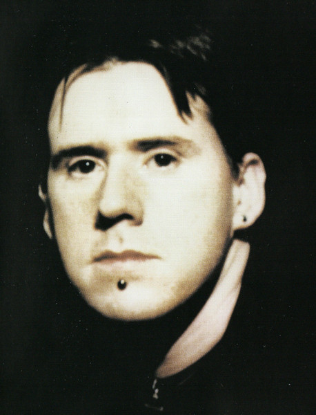
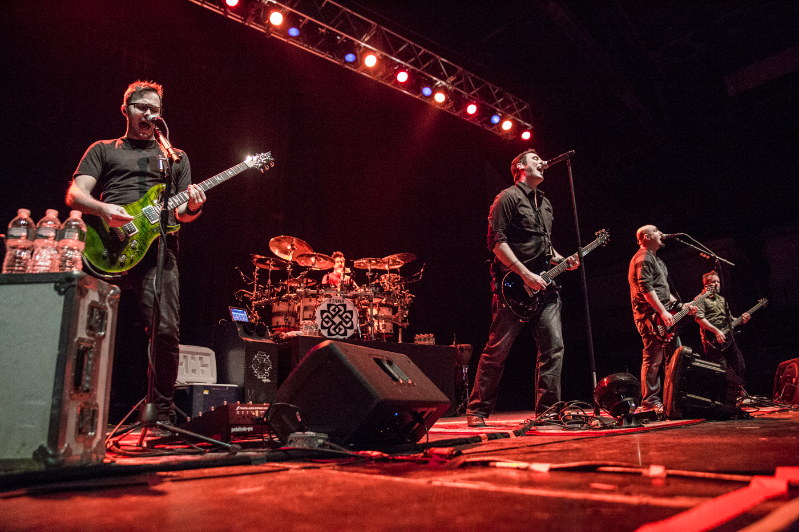
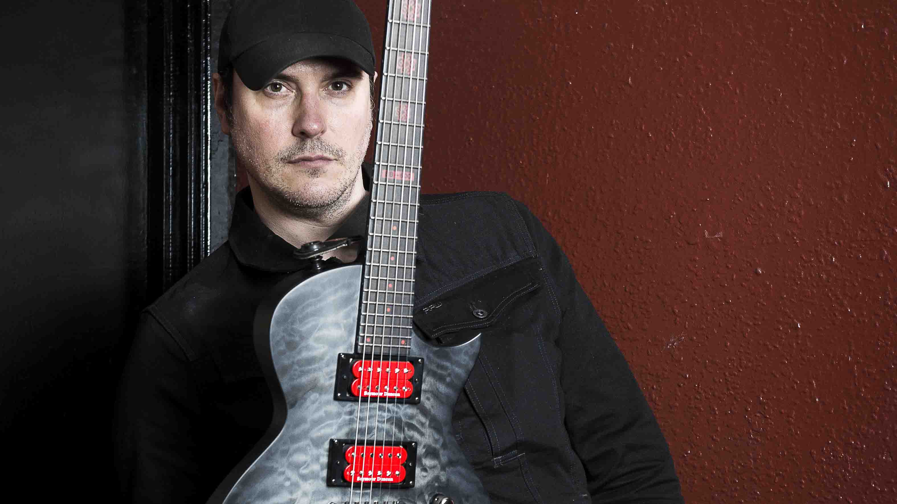
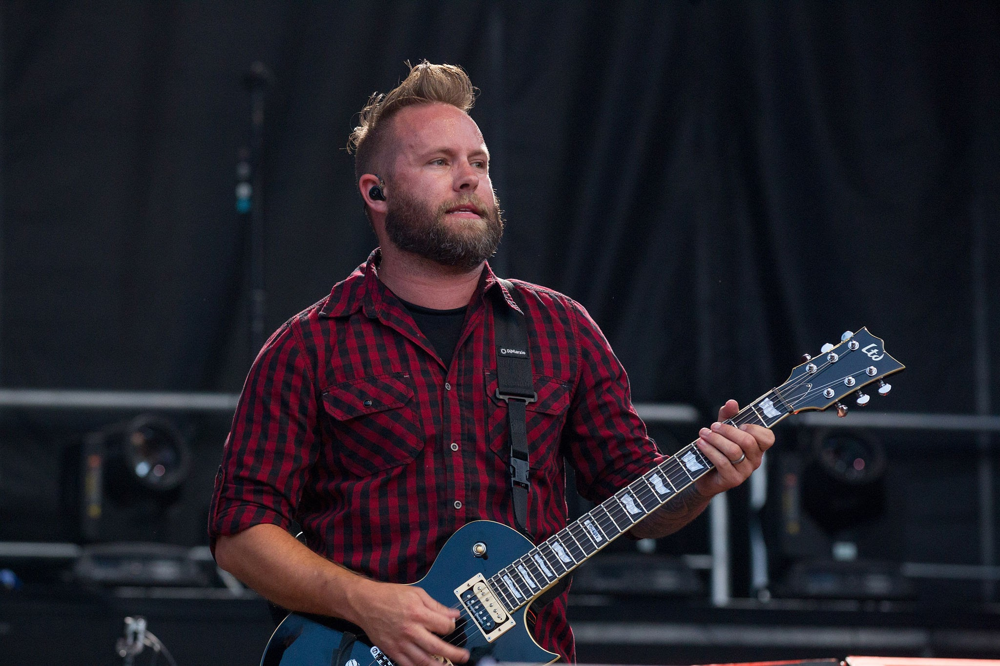
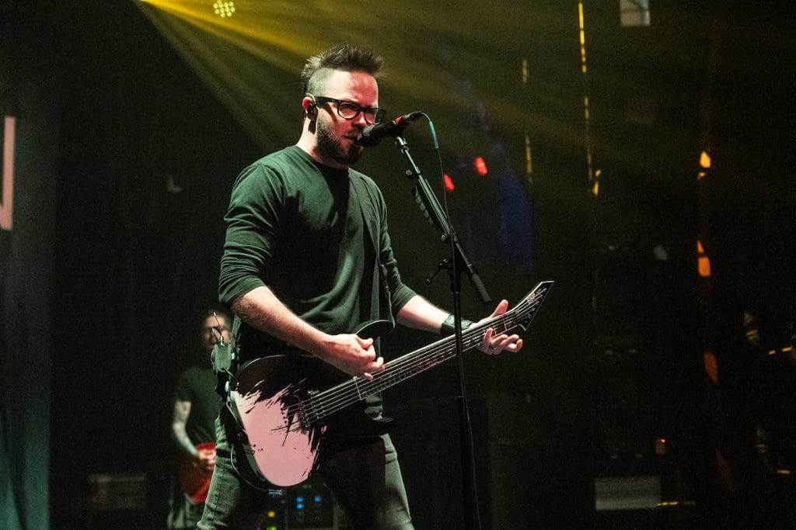
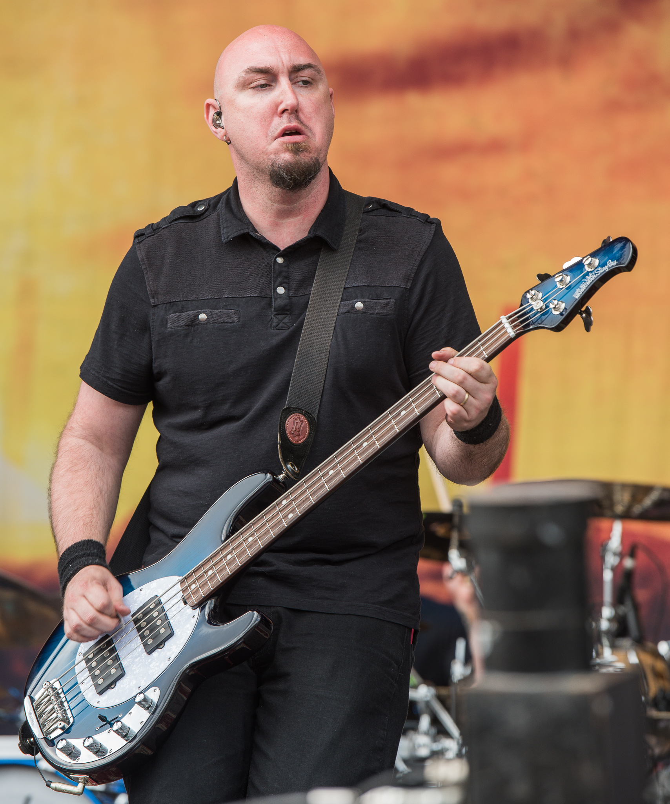
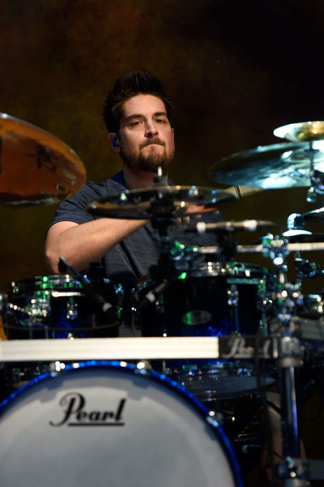
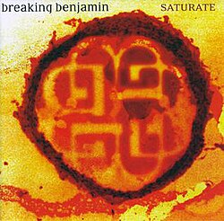

Benjamin Burnley (Historia de Breaking Benjamin)
Benjamin nació en Atlantic City, Nueva Jersey (1978). Su interés por la música empezó temprano, influenciado por el grunge de Nirvana. El origen del nombre: El nombre "Breaking Benjamin" surgió de un accidente real. Mientras Ben tocaba en un club, tomó prestado el micrófono de un tercero y lo rompió sin querer. El dueño del micrófono subió al escenario y dijo: "I'd like to thank Benjamin for breaking my f*ing microphone" (Quiero agradecer a Benjamin por romper mi maldito micrófono).
La Tormenta Interna: El Quiebre de la Formación Clásica
La "decadencia" o crisis más fuerte ocurrió en 2010. Mientras Benjamin Burnley lidiaba con problemas de salud crónicos (fobias y enfermedades no diagnosticadas), los integrantes Aaron Fink y Mark Klepaski tomaron decisiones sin su consentimiento. Esto incluyó la aprobación de una versión remix de "Blow Me Away" con la cantante Valora. Ben, al enterarse, los despidió de inmediato vía e-mail, lo que derivó en una batalla legal de años por el nombre de la banda. Este periodo de silencio casi termina con Breaking Benjamin para siempre.
La banda antes de Saturate y la formación actual
Antes del lanzamiento de Saturate (2002), Breaking Benjamin ya era un cuarteto. En ese debut, la banda estaba formada por:
Formación en la época de Saturate


Más adelante, Chad Szeliga ocupó la batería y, junto a Burnley, Fink y Klepaski, conformó la formación que acompañó gran parte de los discos posteriores (We Are Not Alone, Phobia, Dear Agony) hasta los conflictos internos y la pausa de la banda.
Formación actual
Tras el regreso de Breaking Benjamin (2015 en adelante), la alineación quedó centrada de nuevo en Burnley y en músicos que lo acompañan en gira y estudio:






El ascenso al estrellato (2002–2009)

Recompilación en vídeo de las canciones de Saturate, con título de cada tema y letras en pantalla (~50 min). El vídeo está centrado debajo de la carátula.
Tras formar Breaking Benjamin, el debut Saturate (2002) marcó el sonido melódico y potente de la banda. Le siguieron We Are Not Alone (2004) y Phobia (2006), con temas como «The Diary of Jane», que las llevó a salas cada vez mayores y a la radio. La etapa cerró con Dear Agony (2009): una década en la que el nombre Breaking Benjamin quedó ligado al rock alternativo estadounidense.
/dear agony.jpg)
/phobia.jpg)
/sencillo_Breaking_Benjamin.jpeg)
/Ember.png)
/We_Are_Not_Alone.jpg)